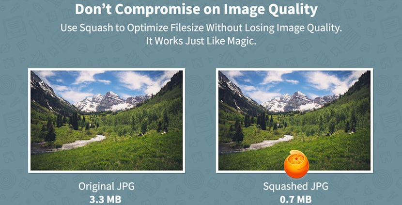

COMPRESIÓN DE DATOS
La compresión de datos es el proceso de reducir el tamaño de un archivo o conjunto de datos para facilitar su almacenamiento, transmisión y manejo eficiente. Se utiliza en una variedad de aplicaciones, desde la compresión de archivos en computadoras hasta la transmisión de datos en redes de comunicación.
Disfruta de la música mientras exploras este contenido.
Principales Algoritmos de Compresión:
1. Algoritmos de Compresión sin Pérdida:
* Run-Length Encoding (RLE): Comprime secuencias repetitivas de datos.
* Huffman Coding: Asigna códigos de longitud variable a diferentes símbolos, asignando códigos más cortos a los símbolos más frecuentes.
* Lempel-Ziv-Welch (LZW): Utilizado en algoritmos como GIF y ZIP, identifica y codifica patrones repetitivos.
2. Algoritmos de Compresión con Pérdida:
* JPEG (Joint Photographic Experts Group): Ideal para imágenes, utiliza la transformada de coseno discreta (DCT) y cuantización.
* MPEG (Moving Picture Experts Group): Ampliamente utilizado para la compresión de video, utiliza técnicas como la eliminación de redundancia temporal y espacial.
* MP3 (MPEG Audio Layer III): Enfocado en la compresión de audio, utiliza modelos psicoacústicos para eliminar información no perceptible por el oído humano.

Tipos de Compresión:
Compresión sin Perdida
No se pierde información durante el proceso de compresión y descompresión. Es esencial para datos que no pueden permitirse pérdida, como archivos ejecutables y documentos de texto.Compresión con Perdida
Elimina datos redundantes o no perceptibles para reducir el tamaño del archivo. Adecuado para imágenes, audio y video, pero conlleva pérdida de calidad.Características:
Razón de Compresión:
La relación entre el tamaño del archivo original y el tamaño comprimido.Velocidad de Compresión/Descompresión::
Indica qué tan rápido se puede realizar el proceso de compresión y descompresión.Tasa de Pérdida (solo para compresión con pérdida):
Cuantifica la pérdida de calidad en comparación con el archivo original.Funcionamiento:
Sin Perdida
Elimina redundancias y utiliza técnicas como la codificación de longitud variable.Con Perdida
Elimina datos menos perceptibles o redundantes, utilizando algoritmos específicos para cada tipo de dato (imagen, audio, video).Aplicaciones:
Compresión de Archivos:
Reducción del tamaño de archivos para ahorrar espacio de almacenamiento y facilitar la transferencia.Transmisión de Datos:
Optimización de la velocidad de transferencia en redes y la eficiencia en la transmisión de archivos.Multimedia:
Compresión de imágenes (JPEG), audio (MP3), y video (MPEG) para facilitar el almacenamiento y la transmisión en diferentes dispositivos y plataformas.Backup y Archivado:
Reducción del espacio necesario para almacenar copias de seguridad y archivos históricos.Compresión en Tiempo Real:
Importante en aplicaciones que requieren una rápida transmisión de datos, como videoconferencias y transmisiones en vivo.En resumen, la compresión de datos es esencial en la gestión eficiente de recursos, especialmente en entornos donde el espacio de almacenamiento y la velocidad de transmisión son críticos.